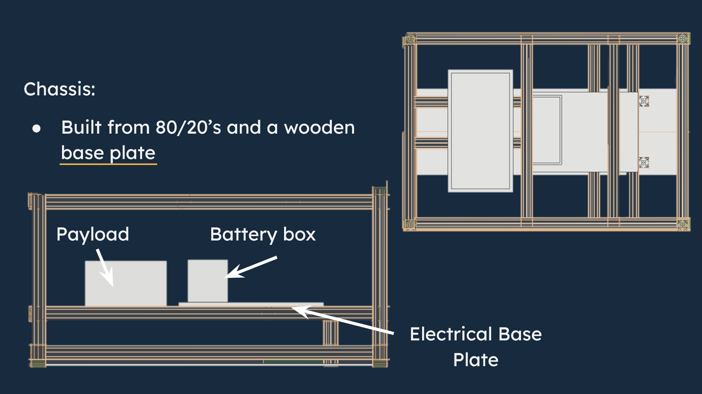
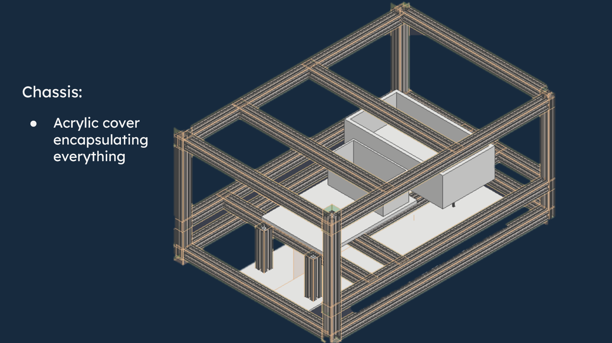

chassis design
built from 80/20 extrusion for modularity, rapid iteration, and straightforward subsystem integration. the chassis layout separates payload, battery, and electronics while leaving room for an acrylic enclosure and future design changes.